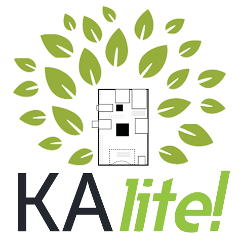
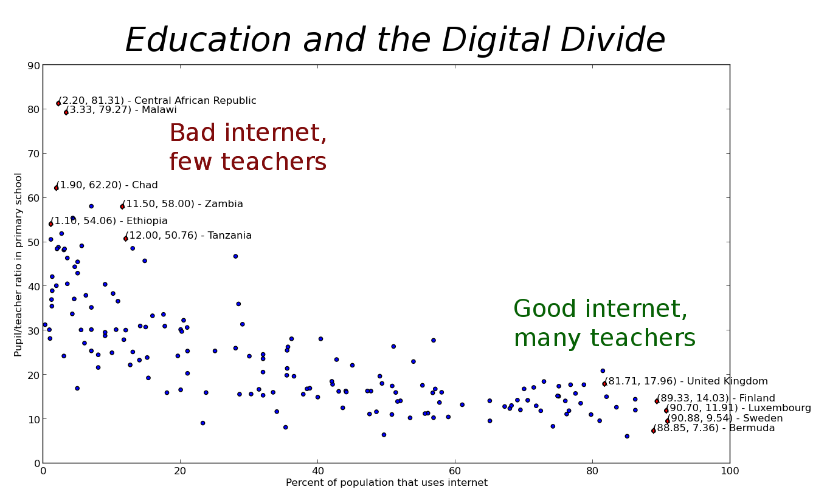
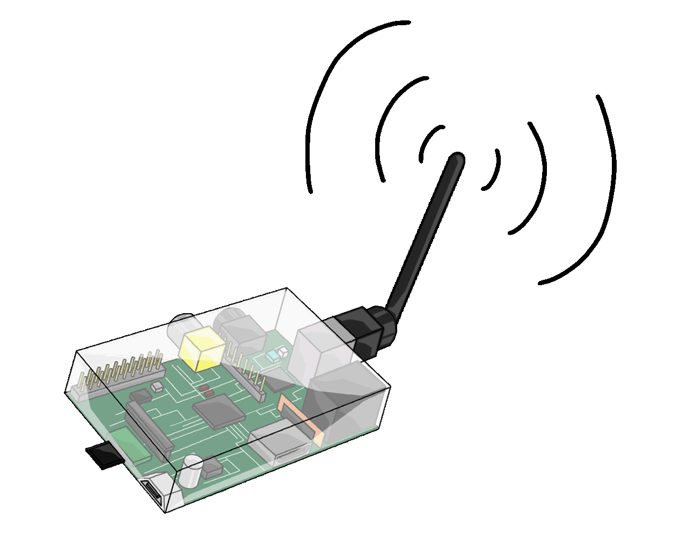
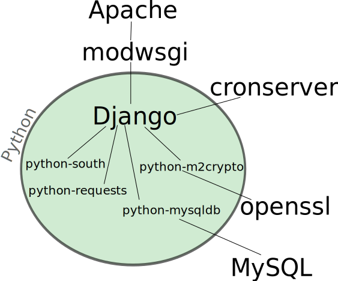
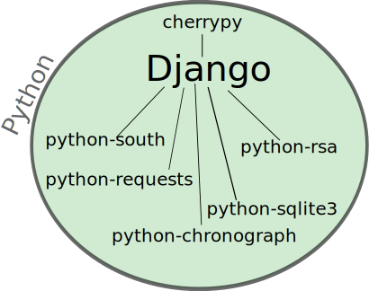

A free world-class education for anyone anywhere.
The Khan Academy is an organization on a mission. We're a not-for-profit with the goal of changing education for the better by providing a free
world-class education for anyone anywhere.
All of the site's resources are available to anyone. It doesn't matter if you are a student, teacher,
home-schooler, principal, adult returning to the classroom after 20 years, or a friendly alien just trying to get a leg up in earthly biology. The Khan Academy's
materials and resources are available to you completely free of charge.
An inspiring organization with an inspiring mission...
Note the emphasis on ubiquitous availability!

Bridging the Divide
Education and the internet have the potential to be global equalizers.
Right now, they often widen the chasm between haves and have-nots.
Our mission is to connect the disconnected, and help make universal education truly universal.
Guiding Technological Principles
- Cross-platform: Windows, Linux, OSX, Android
- Easy for anyone to install
- Synchronization; eventual consistency
- Support cheap, low-power hardware


